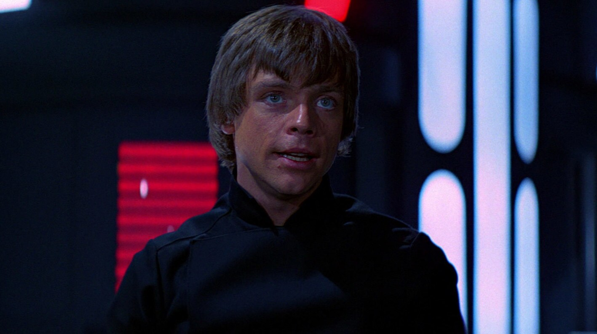
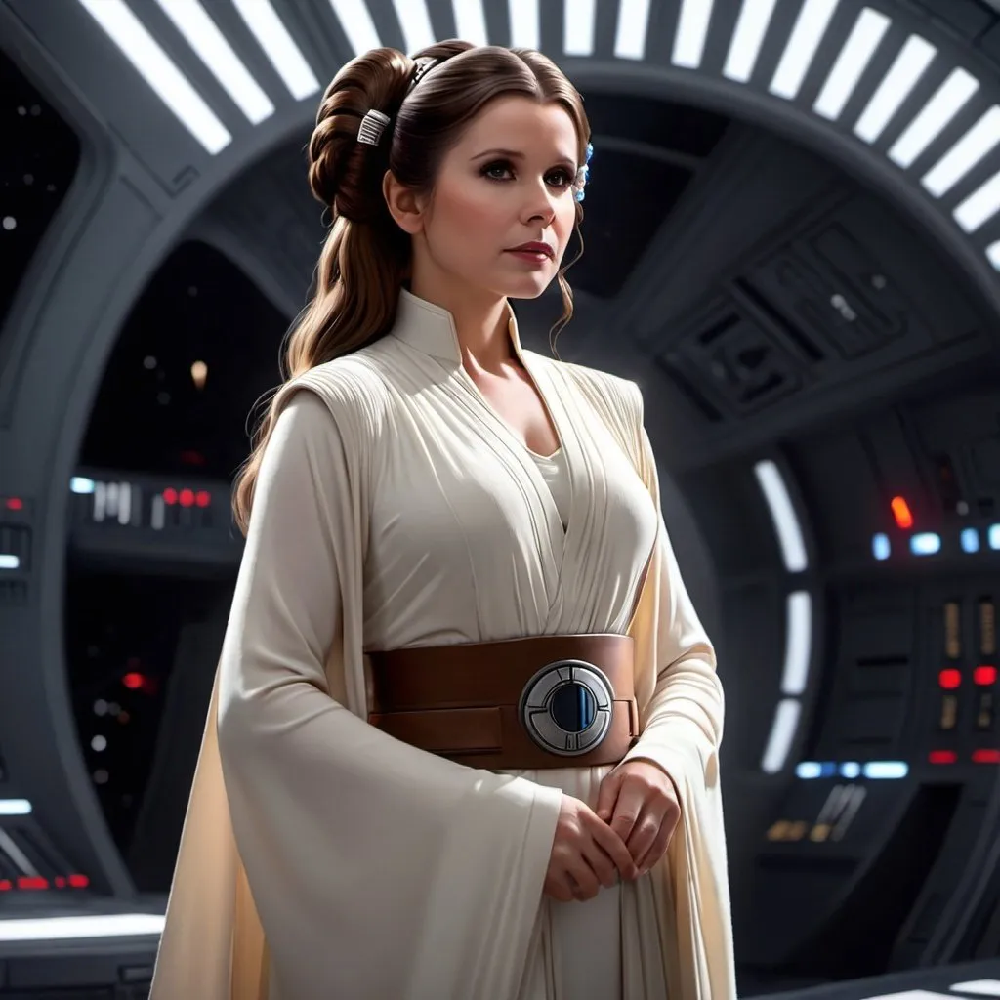

Personagens Icônicos
Luke Skywalker
Luke Skywalker, o herói da trilogia original, é o Jedi que combate o Império Galáctico e confronta Darth Vader.
Darth Vader

Darth Vader, o imponente Sith Lord, ex-Jedi Anakin Skywalker, é um dos vilões mais famosos da história do cinema.
Leia Organa
Leia Organa, princesa de Alderaan, é uma líder rebelde e uma das figuras chave na luta contra o Império.